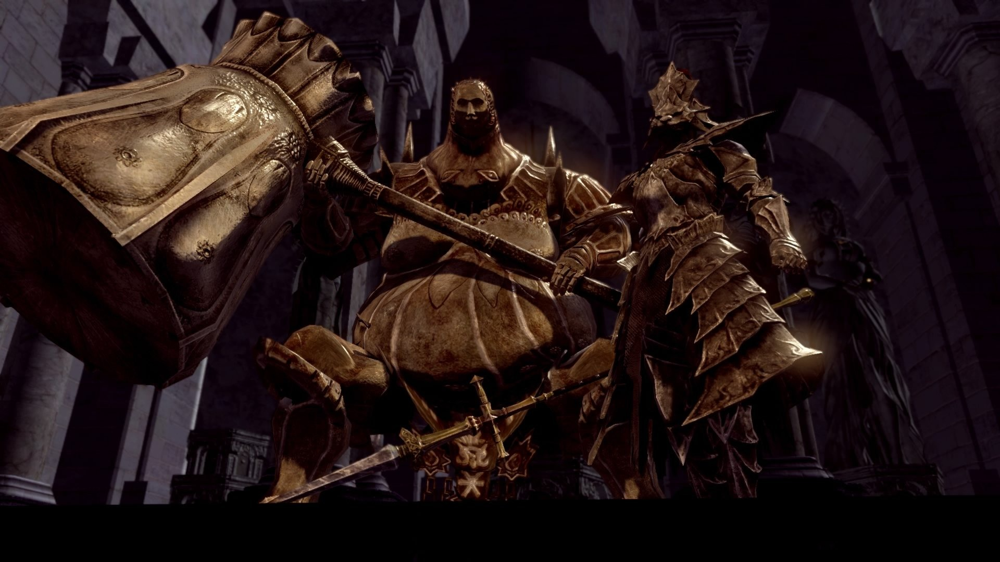
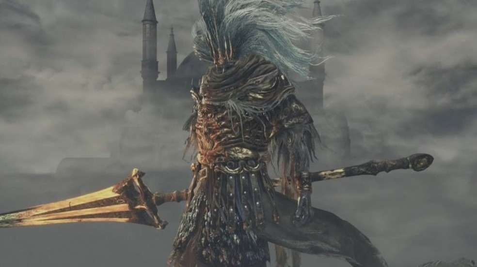
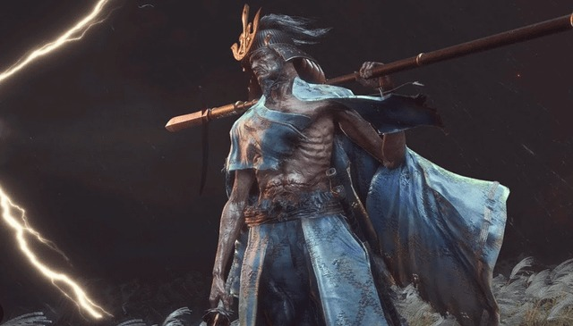
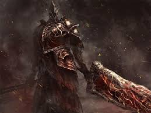

Os melhores chefes da franquia Souls Like.
Esses são apenas alguns dos muitos chefes memoráveis que a franquia Souls Like tem a oferecer. Cada um deles traz desafios únicos e experiências inesquecíveis para os jogadores.
- Ornstein e Smough - Dark Souls

O trovão e o martelo.
Guardas implacáveis da catedral de Anor Londo.
Glória e brutalidade unidos em um único teste. - Artorias - Dark Souls

O lobo sem glória.
Cavaleiro de Gwyn que caiu lutando contra a escuridão.
Corrompido, mas nunca esquecido. - Nameless King - Dark Souls III

O herdeiro renegado.
Um deus que desafiou Gwyn por lealdade aos dragões.
Sem nome, mas eterno em poder. - Lady Maria - Bloodborne

A caçadora trágica.
Guardiã do segredo de Byrgenwerth.
Uma luta entre amor e dor. - Isshin, The Sword Saint - Sekiro

O último samurai.
Mestre de todas as armas e estilos.
Um duelo que ecoa na história. - Fume Knight - Dark Souls II

O guardião do fogo.
Um guerreiro que carrega o peso de sua armadura.
Fumaça e fogo se entrelaçam em batalha.